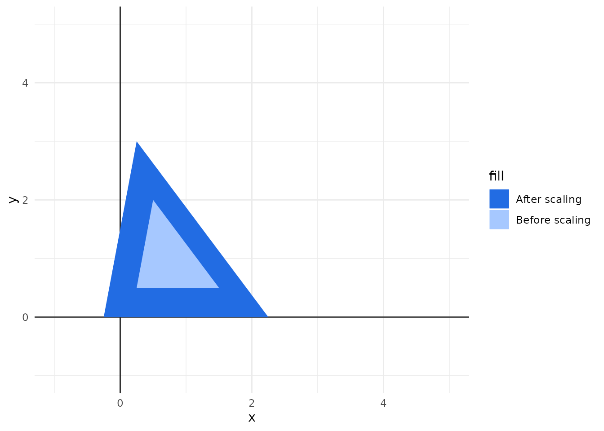

When we are displaying some object (or shape) in an image, we might want to transform this object (or shape) in some way. For example, we might need to move this object to a different location in the image, or we might need to scale this object to a different size, or maybe, to rotate it into a different angle.
In computer graphics, this is called as a transformation. We apply a transformation to the object we have, and this object gets moved in some way in the visual space of our image. There are three basic transformations that are essential to the world of computer graphics, which are:
Scaling.
Translation.
Rotation.
Each of these three basic transformations uses simple math operations over the coordinates of each vertex that compose your object to achieve a specific visual effect/transformation.
2.1 Translation
Lets begin with the easiest and simplest of all transformations, which is translation. A translation is used to move your object to a different position in the cartesian field.
Figure 2.1 presents this transformation visually. The light blue rectangle represents the original position of the rectangle in the cartesian field. While the strong blue rectangle represents the position that the rectangle was moved after we applied the translation.
Figure 2.1: An example of translating an object in a cartesian field
But how translation works? In summary, to translate an object, all you have to do is to add a “x offset” and a “y offset” to all vertices of your object. The “x offset” represents how much you want to move the object horizontally, while the “y offset” represents how much to move the object vertically.
The direction of the movement is determined by the fact if the offset you are adding is a positive or a negative number. For example, if you want to move your object to the right, then, you add a positive x offset to each x position. But if you want to move your object to the left instead, then, you add a negative x offset. The same logic applies to vertical movements.
For example, a triangle have three vertices. If we want to translate this triangle three points to the left, and two points up, then, we need to add the number 3 to the x position, and the number 2 to the y position of each vertex of this triangle.
The following code demonstrates this idea. We have a first triangle (object triangle), represented by the vertices \((-1,0), (1,0), (0,2)\). Then, we create a new triangle (object translated_triangle) that is translated by adding the “x offset” and “y offset” to each x and y positions, respectively.
library(ggplot2)triangle <-data.frame(x =c(-1, 1, 0),y =c(0, 0, 2))x_offset <-3y_offset <-2translated_triangle <-data.frame(x = triangle$x + x_offset,y = triangle$y + y_offset)canvas <-ggplot() +theme_minimal() +lims(y =c(-1, 5), x =c(-1, 5)) +geom_vline(aes(xintercept =0), color ="#222222") +geom_hline(aes(yintercept =0), color ="#222222")canvas +geom_polygon(aes(x = x, y = y, fill ="Before translation"),data= triangle ) +geom_polygon(aes(x = x, y = y, fill ="After translation"),data= translated_triangle ) +scale_fill_manual(values =c("#226ce3", "#a6c8ff"))
So, if you need to translate any object in your image, you always need to do the same thing, which is to add x and y offsets to each coordinate/vertex of your object.
However, the way you do this can vary depending on the specific geom you are using in your plot. Because different geoms in ggplot2 can treat the vertices of your object very differently.
For example, you can draw rectangles by using geom_rect() or geom_tile(). But these geoms are completely different in the way they draw the actual rectangle. geom_rect() draws a rectangle by using the coordinates of the four corners (or vertices) of the rectangle. In contrast, geom_tile() draw a rectangle by using a single coordinate (which is the center of the rectangle), plus a width and height values for the rectangle.
That sad, if you needed to translate a rectangle drawn by the geom_rect() geom, then, you do the same logic as the previous code example. But, in the other hand, is your rectangle is drawn by the geom_tile() geom, then, all you need to do is to translate a single coordinate (or vertex), which is the center point of the rectangle.
Scaling is used to scale your object into a different size (i.e. to raise/shrink the size of your object). Figure 2.2 presents this process visually. We begin with the light blue and smaller triangle, and then, we scale this triangle into a bigger size, getting the strong blue triangle as a result.
Figure 2.2: Scaling a triangle into a bigger size
To scale an object, we perform essentially the same thing that we did in translation, which was a simple math operation over the coordinates of the vertices that compose our object. But instead of adding offsets to the coordinates, we multiply each coordinate by a fixed amount/factor.
As an example, lets create a new triangle with the coordinates \((0,0), (1,0), (0,2)\). We can get a triangle that is twice bigger by multiplying each coordinate by a factor of two.
triangle <-data.frame(x =c(0, 1, 0),y =c(0, 0, 2))twice_triangle <-data.frame(x = triangle$x *2,y = triangle$y *2)canvas +geom_polygon(aes(x = x, y = y, fill ="After scaling"),data= twice_triangle ) +geom_polygon(aes(x = x, y = y, fill ="Before scaling"),data= triangle ) +scale_fill_manual(values =c("#226ce3", "#a6c8ff"))
If you want to scale your object, but at the same time, keep the same center position as the original object, then, we need to perform two transformations at once: scaling and translation. We first scale the object to the size we want, and then, we translate this object to the same center position as the original object. Take this case as an example:
triangle <-data.frame(x =c(0.25, 1.5, 0.5),y =c(0.5, 0.5, 2))twice_triangle <-data.frame(x = (triangle$x *2) - (max(triangle$x) /2),y = (triangle$y *2) - (max(triangle$y) /2))canvas +geom_polygon(aes(x = x, y = y, fill ="After scaling"),data= twice_triangle ) +geom_polygon(aes(x = x, y = y, fill ="Before scaling"),data= triangle ) +scale_fill_manual(values =c("#226ce3", "#a6c8ff"))
So all you need to do is to multiply each coordinate by the factor you want to scale the object. If you want a bigger object, then, the factor must be a number greater than 1. But if you want a smaller object instead, then, the factor must be a number between 0 and 1. If you want an object that is half the original size, you should use the factor is 0.5.
2.3 Rotation
Rotation is used to rotate your object to a different angle. Figure 2.3 presents this transformation visually. We start with the light blue rectangle, which is parallel to the x axis, and then, we rotate this rectangle into a new angle, getting the strong blue rectangle as the result.
Figure 2.3: Rotating a rectangle into a different angle
Rotating an object is a little more complicated than the other transformations. Only because it involves some magic calculations with a little of trigonometry.
Given a coordinate with \(x\) and \(y\) positions in a Cartesian plane, and a angle \(A\) in radians to rotate this initial coordinate, the new \(x'\) and \(y'\) positions can be calculated using the formulas below. \(cos()\) and \(sin()\) in these formulas are the cosine and sine trigonometric functions.
\[
x' = x \times cos(A) + y \times - sin(A)
\tag{2.1}\]
\[
y' = x \times sin(A) + y \times cos(A)
\tag{2.2}\]
This seems complicated, but, it actually is not. I mean really, you just have to follow these formulas above and you will be happy. But remember one detail about these formulas: the trigonometric functions cos() and sin() take as input angles that are in radians.
We usually think or talk about angles using the degrees measure (e.g. 90 degrees, 180 degrees, etc.). So you must convert your angle in degrees to radians, before you pass it to cos() and sin() functions. You can do this by using the function deg2rad() below, that uses the equation that we introduced at Chapter 1 to convert these measures. Notice that this function uses the PI value (i.e. the built-in pi object) to make this conversion.
# A function to convert degrees to radiansdeg2rad <-function(deg){return(deg * pi /180)}
As a first example, lets take a triangle with coordinates \((0,0), (1,0), (0,2)\). Lets consider we wanted to perform two different rotations over this triangle. The first, we rotate it to 30 degrees clockwise, and in the second, 90 degrees clockwise.
triangle <-data.frame(x =c(0, 1, 0),y =c(0, 0, 2))angle <-deg2rad(-30)first_rotated_triangle <-data.frame(x = (triangle$x *cos(angle)) + (triangle$y *-1*sin(angle)),y = (triangle$x *sin(angle)) + (triangle$y *cos(angle)))angle <-deg2rad(-90)second_rotated_triangle <-data.frame(x = (triangle$x *cos(angle)) + (triangle$y *-1*sin(angle)),y = (triangle$x *sin(angle)) + (triangle$y *cos(angle)))canvas +geom_polygon(aes(x = x, y = y, fill ="After second rotation"),data = second_rotated_triangle ) +geom_polygon(aes(x = x, y = y, fill ="After first rotation"),data = first_rotated_triangle ) +geom_polygon(aes(x = x, y = y, fill ="Before rotation"),data = triangle ) +scale_fill_manual(values =c("#226ce3", "#0c3a85", "#a6c8ff"))

One important aspect about this operation, is that the above formulas (Equation 2.1 and Equation 2.2) rotate the object around the origin point of the Cartesian plane, i.e. coordinate \((0, 0)\).
In other words, the object is rotated around the origin point of the Cartesian plane, instead of rotating around the center point of the object, or, rotating around the leftmost vertex of the object, or around whatever other point you imagine.
You can see more clearly the effects of this fact by increasing the distance of your object from the origin point. In the example below, the same triangle and rotations as the previous example are used. But this time, the original triangle is further apart from the origin point (code is omitted for brevity reasons):